Aplicación web para identificar una canción a partir de un fragmento de audio
Andrés Felipe Verbel Pacheco
Curso de Desarrollo Web Full Stack — CUC · Octubre de 2026
Versión en línea: https://reconocimiento-audio-fourier.vercel.app
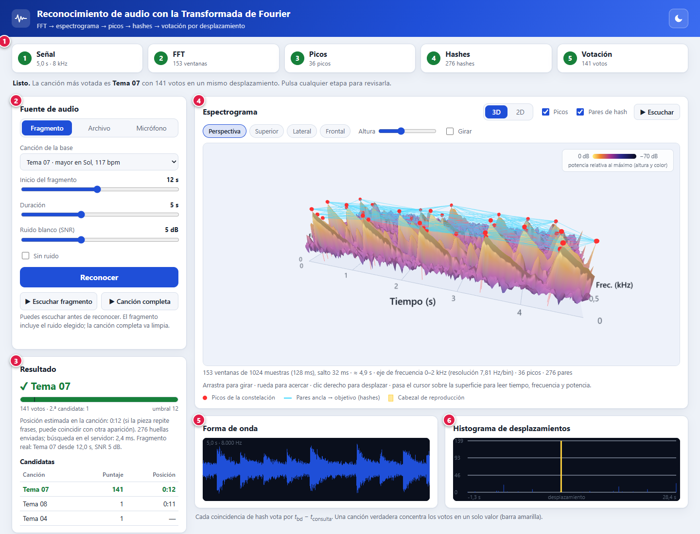
Es una versión didáctica de lo que hacen servicios como Shazam: escuchas unos segundos de una canción y la aplicación dice cuál es y en qué momento de la canción estás. Funciona con una base de {{n_can}} canciones sintéticas de 30 segundos (generadas por código para no usar música con derechos de autor), y reconoce fragmentos incluso con mucho ruido.
Además de reconocer, la aplicación muestra cómo lo hace: dibuja el espectrograma (la «huella» del sonido) en 3D y en 2D, marca los picos que usa el algoritmo, y permite revisar cada etapa. El fundamento matemático está en el documento Modelos_Matematicos.pdf.
| Elemento | Detalle |
|---|---|
| Sistema | Windows 10 u 11 (el arranque con doble clic usa un archivo .bat). En otros sistemas se inicia con dos comandos (sección 3). |
| Node.js | Se recomienda la versión LTS actual, desde nodejs.org (el desarrollo y las pruebas se hicieron con la 26). Solo hace falta para ejecutar la aplicación en tu computador. |
| Navegador | Microsoft Edge o Google Chrome actualizados (se probó con Edge). Para la vista 3D el navegador debe tener WebGL activado, lo habitual. |
| Internet | Solo la primera vez, para descargar las dependencias (npm install). Después funciona sin conexión. |
| Micrófono | Opcional, solo para el modo «Micrófono». |
| Sin instalar nada | Puedes usar la versión en línea: https://reconocimiento-audio-fourier.vercel.app |
demo.Listo: http://localhost:3000. El navegador debería abrirse solo en esa dirección.Listo: (casi siempre http://localhost:3000; si ese puerto estaba ocupado, el programa elige el siguiente libre, como 3001).cd demo npm install # solo la primera vez npm start # inicia el servidor
Luego abre http://localhost:3000 en el navegador. Para detener el servidor pulsa Ctrl+C en esa ventana.
Abre https://reconocimiento-audio-fourier.vercel.app. No necesitas instalar nada. La primera visita puede tardar unos segundos más si nadie la había usado en un rato. El micrófono funciona porque la dirección es segura (HTTPS).
Al abrir la aplicación ves esto. Todavía no hay nada analizado, por eso el visor muestra una invitación a reconocer un audio.
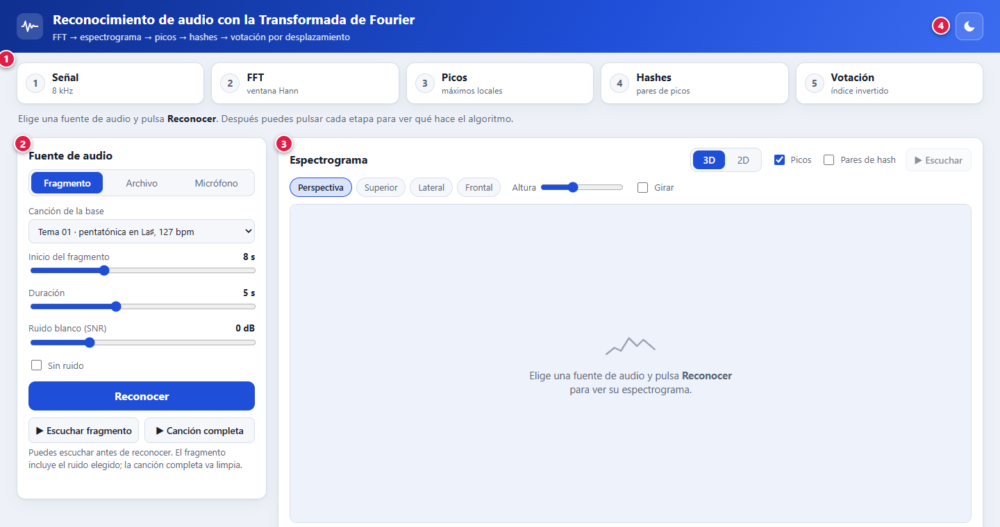
Cuando ya hay un reconocimiento, aparecen las demás zonas (Figura 2):
| N.º | Zona | Para qué sirve |
|---|---|---|
| 1 | Barra de etapas | Cinco tarjetas (Señal, FFT, Picos, Hashes, Votación) que se iluminan mientras se reconoce. Debajo de cada nombre aparece un dato real (por ejemplo «153 ventanas»). Al pulsar una, se explica qué hace y el visor muestra lo que corresponde. |
| 2 | Fuente de audio | Aquí eliges qué audio analizar: un fragmento de la base, un archivo tuyo o una grabación del micrófono. |
| 3 | Resultado | La canción reconocida, el medidor de confianza y la tabla de candidatas. |
| 4 | Espectrograma | La imagen del sonido en 3D o 2D, con picos y pares de hash. Se puede girar, acercar y escuchar. |
| 5 | Forma de onda | El audio analizado, tal como lo ve el algoritmo (a 8 kHz). Muestra un cursor al reproducirlo. |
| 6 | Histograma | Cómo votó cada coincidencia. La barra amarilla es el desplazamiento ganador (sección 6). |
La tarjeta Fuente de audio tiene tres pestañas. Empieza por la primera, que es la más sencilla.
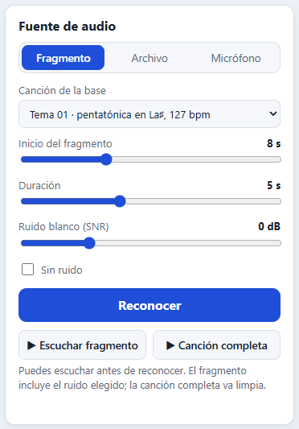
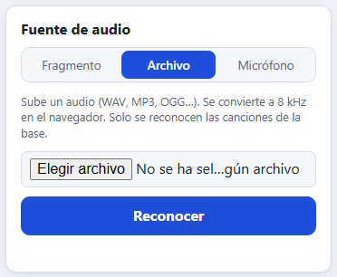
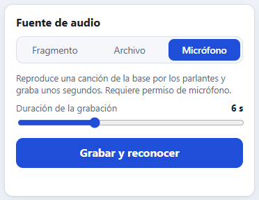
Figura 3. Las tres pestañas de la tarjeta «Fuente de audio».
Toma un trozo de una de las {{n_can}} canciones de la base y, si quieres, le añade ruido para ponerla a prueba.
temaNN.wav de la carpeta demo/public/audio.localhost o en la versión en línea (HTTPS).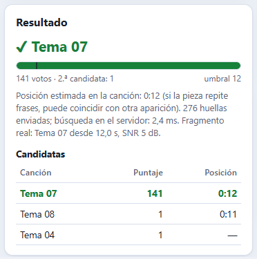
Histograma de desplazamientos. Cada hash que coincide con la base «vota» por un valor llamado desplazamiento (la diferencia entre el instante en la base y en tu fragmento). Si es la canción correcta, casi todos los votos caen en un solo valor: es la barra amarilla alta de la Figura 2 (6). Las barras azules pequeñas son coincidencias casuales.
Con la base de {{n_can}} canciones, la mediana de votos de la canción correcta fue de {{votos_5}} con 5 s sin ruido y de {{votos_10}} con 10 s; con ruido de 0 dB y 5 s bajó a {{votos_5_0db}}, y con −5 dB a {{votos_5_m5}}. Las canciones equivocadas casi siempre quedan entre 1 y 6 votos. Por eso el umbral de {{umbral}} separa bien ambos casos.
{{tabla_rendimiento}}Tabla 3. Porcentaje de fragmentos reconocidos y aceptados según su duración y el ruido (60 consultas por celda; experimento del informe IEEE).
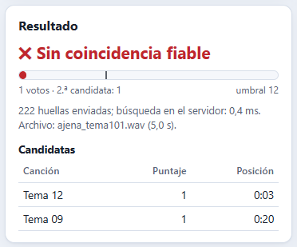
No es un error: significa que ninguna canción reunió suficientes votos. Las causas más comunes son: (a) la canción no está en la base (como la de la Figura 5), (b) el fragmento es muy corto (menos de 3 s), o (c) hay demasiado ruido (por debajo de −10 dB). Prueba con una duración mayor o menos ruido.
El espectrograma es una «fotografía» del sonido: el eje horizontal es el tiempo, el eje de profundidad es la frecuencia (de 0 a 2 kHz) y la altura y el color indican la potencia de cada frecuencia en cada instante. Las notas musicales aparecen como crestas largas; el ruido, como una alfombra baja y rugosa.
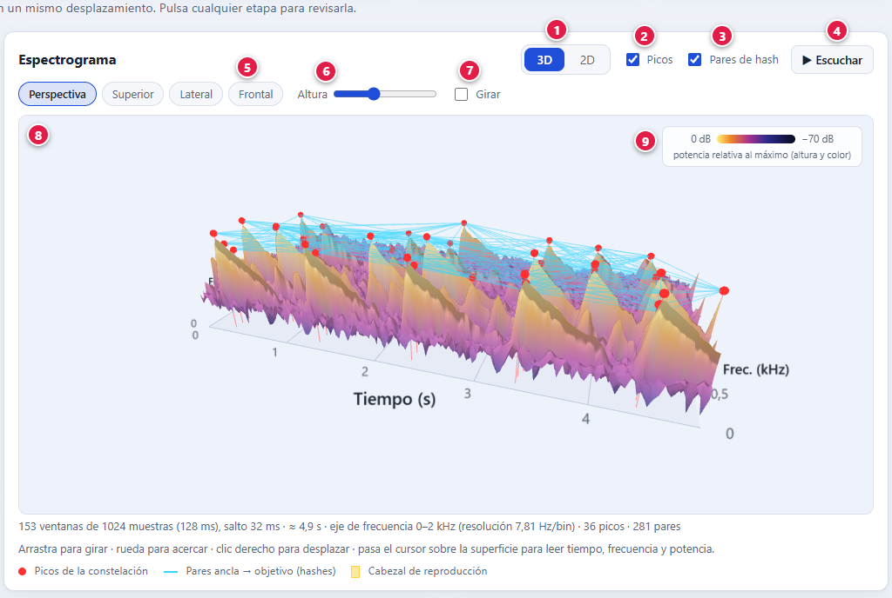
| N.º | Control | Qué hace |
|---|---|---|
| 1 | 3D / 2D | Cambia entre la vista en relieve y la vista plana clásica (con ejes y números). |
| 2 | Picos | Muestra u oculta las esferas rojas: los máximos locales que forman la huella de la canción. |
| 3 | Pares de hash | Muestra u oculta las líneas celestes que unen cada pico «ancla» con sus «objetivos»; cada línea genera un hash. |
| 4 | ▶ Escuchar | Reproduce el audio analizado con un cabezal amarillo que recorre el espectrograma y la forma de onda. Se activa tras reconocer. Vuelve a pulsar para detener. |
| 5 | Punto de vista | Perspectiva, Superior (como una vista en planta), Lateral y Frontal. La cámara se mueve con una animación suave. |
| 6 | Altura | Exagera o aplana el relieve (solo 3D). |
| 7 | Girar | Rotación automática, útil para exponer. |
| 8 | Área 3D | Arrastrar con el botón izquierdo: girar · Rueda: acercar o alejar · Botón derecho y arrastrar: desplazar · Pasar el cursor sobre la superficie: lee tiempo, frecuencia y potencia en un recuadro. |
| 9 | Escala de color | De amarillo (0 dB, lo más fuerte) a azul oscuro (−70 dB), siempre relativa al punto más fuerte de ese audio. |
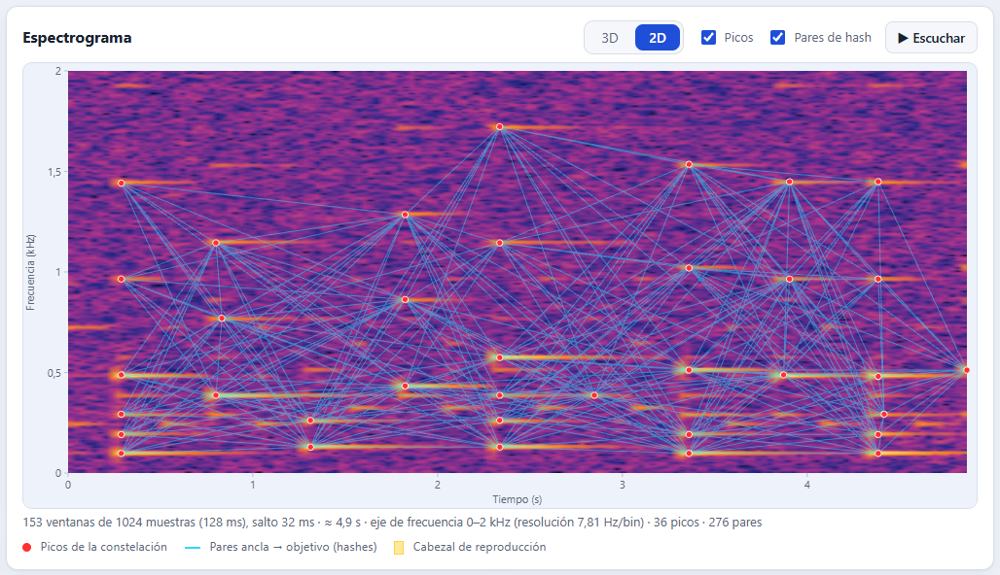
La barra superior no es solo decorativa: después de reconocer, pulsa cualquier etapa para ver su explicación y qué muestra el visor en ese momento.
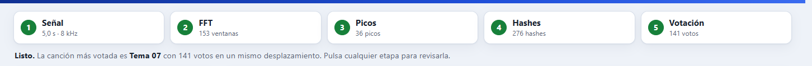
| Etapa | Qué hace | Al pulsarla |
|---|---|---|
| 1. Señal | Convierte el audio a mono y lo remuestrea a 8 kHz (solo importa la banda de 0 a 4 kHz, donde viven la melodía y sus armónicos). | Te lleva a la forma de onda. |
| 2. FFT | Corta la señal en ventanas de 128 ms (una cada 32 ms) y calcula la Transformada de Fourier de cada una. Juntas forman el espectrograma. | Oculta picos y pares: ves solo el espectrograma. |
| 3. Picos | Se queda con los máximos locales (las esferas rojas): la «constelación» de la canción, que resiste el ruido. | Muestra los picos. |
| 4. Hashes | Une cada pico con los siguientes y forma un hash de 24 bits por cada par (frecuencia 1, frecuencia 2, separación en el tiempo). | Muestra picos y pares. |
| 5. Votación | El servidor busca esos hashes en su índice; cada coincidencia vota por un desplazamiento. Gana la canción con más votos concentrados. | Te lleva al histograma. |
El botón de la luna/sol (esquina superior derecha) cambia entre tema claro y oscuro; la aplicación recuerda tu elección. El tema oscuro es cómodo en salones con poca luz o con proyector.
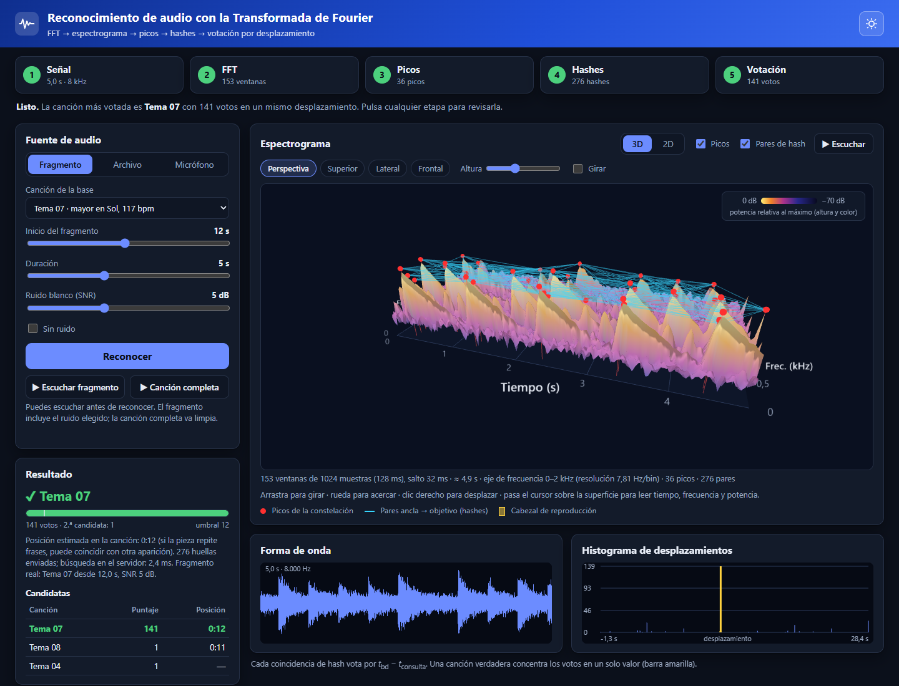
Puedes abrir la aplicación ya configurada añadiendo parámetros a la dirección. Es útil para dejar preparada una demostración:
| Parámetro | Significado | Ejemplo |
|---|---|---|
cancion | Canción de la base (tema01 … tema12) | cancion=tema07 |
inicio, dur | Inicio y duración del fragmento, en segundos | inicio=12&dur=5 |
snr | Ruido en dB, o inf para ninguno | snr=0 · snr=inf |
auto | 1 = reconocer al abrir | auto=1 |
vista, cam | Vista 2d; cámara superior, lateral, frontal | vista=2d · cam=superior |
pares, giro, altura | pares=1 muestra los pares; giro=1 gira solo; altura numérica | pares=1&giro=1 |
tema | claro u oscuro | tema=oscuro |
Ejemplo completo: http://localhost:3000/?cancion=tema07&inicio=12&dur=5&snr=5&auto=1&pares=1
| Qué ves | Causa probable | Qué hacer |
|---|---|---|
| «Node.js no está instalado» | Falta instalar Node.js. | Instala la versión LTS desde nodejs.org, reinicia el equipo o abre una ventana nueva y vuelve a ejecutar iniciar.bat. |
| «No se pudieron instalar las dependencias» | Sin internet en la primera ejecución, o un proxy. | Conéctate a internet y repite. Solo hace falta esa vez. |
| El navegador no se abre solo | Tu navegador predeterminado tardó o bloqueó la apertura. | Lee el mensaje Listo: http://localhost:… en la ventana negra y escribe esa dirección en el navegador. |
| El puerto 3000 está ocupado | Otra aplicación (o una copia anterior) lo usa. | iniciar.bat elige el siguiente libre y lo indica. A mano: $env:PORT=3001; npm start en PowerShell. |
| Página en blanco, o botones que no responden | Hay un servidor viejo en ese puerto o el navegador guardó una versión antigua. | Cierra la ventana «Servidor de la demo», vuelve a ejecutar iniciar.bat y recarga con Ctrl+F5. |
| No se escucha el audio | Volumen bajo, salida de sonido incorrecta o pestaña silenciada. | Revisa el volumen de Windows y que la pestaña no tenga el altavoz tachado. Recarga con Ctrl+F5 y prueba ▶ Canción completa. |
| «No se pudo acceder al micrófono» | Permiso denegado, otro programa usa el micrófono, o la página no es segura. | Pulsa el candado junto a la dirección y permite el micrófono. Usa localhost o la versión en línea (HTTPS). Cierra otros programas que lo usen. |
| «No se pudo decodificar el audio» | Formato que el navegador no abre, o archivo que no es de audio. | Convierte el archivo a WAV o MP3 y repite. |
| «El audio es demasiado corto» / «en silencio» | Menos de unos 0,25 s, o sin señal. | Usa un audio más largo (ideal 5 s o más) y con sonido. |
| «Sin coincidencia fiable» con una canción que sí es de la base | Fragmento muy corto o con demasiado ruido; o, con micrófono, eco o volumen bajo. | Aumenta la duración a 5 s o más, baja el ruido o acerca el micrófono al parlante. |
| La vista 3D no aparece (aviso de WebGL) | El navegador tiene WebGL o la aceleración por hardware desactivados. | Activa la aceleración por hardware en los ajustes del navegador y reinícialo. Mientras tanto, la vista 2D funciona igual. |
| Todo va lento o el 3D se entrecorta | Poca memoria libre o muchos programas abiertos. | Cierra programas pesados y otras pestañas. Si persiste, usa la vista 2D. |
| La posición estimada parece incorrecta | La pieza repite frases y el fragmento coincide con otra aparición. | Es esperable; el texto del resultado lo advierte. El nombre de la canción sigue siendo correcto. |
| La versión en línea tarda en la primera carga | El servicio estaba «dormido» y arranca al recibir la primera visita. | Espera unos segundos y vuelve a intentar; después responde rápido. |
Un guion de unos 4 minutos que muestra todo lo importante:
| Dónde y qué | Para qué sirve |
|---|---|
demo › npm start | Inicia el servidor en el puerto 3000. |
demo › npm test | Ejecuta las 13 pruebas automáticas (FFT, picos, reconocimiento, etc.). |
demo › npm run canciones | Regenera las {{n_can}} canciones sintéticas. |
demo › npm run experimentos | Repite los experimentos del informe (tarda cerca de un minuto). |
informe › npm run build | Genera Informe_IEEE.pdf. |
informe › npm run modelos | Genera Modelos_Matematicos.pdf. |
informe › npm run manual | Genera este manual. |
Cada vez que quieras generar un PDF por primera vez, ejecuta antes npm install dentro de la carpeta informe. Los PDF necesitan Microsoft Edge o Google Chrome instalados.
actividad_reconocimiento_audio/
├── README.md
├── demo/ la aplicación
│ ├── iniciar.bat arranque con doble clic
│ ├── server.js servidor y API
│ ├── lib/ FFT, picos, hashes, síntesis, colores
│ ├── public/ pantalla (HTML, CSS, JS) y las canciones (audio/)
│ └── test/ pruebas automáticas
└── informe/ documentos
├── Informe_IEEE.pdf informe de investigación
├── Modelos_Matematicos.pdf fórmulas usadas
└── Manual_de_Uso.pdf este manual
Documentos relacionados: Informe_IEEE.pdf (investigación y resultados) y Modelos_Matematicos.pdf (todas las fórmulas con sus parámetros).